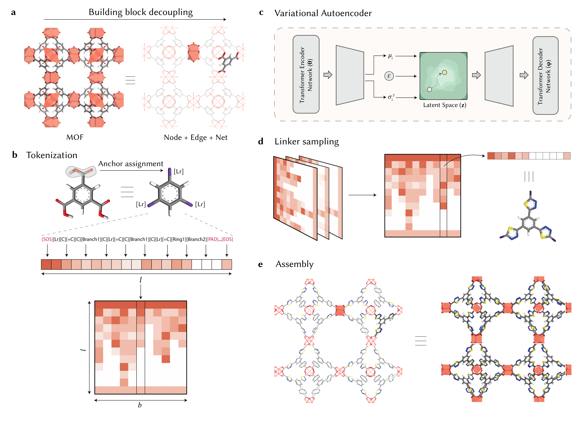
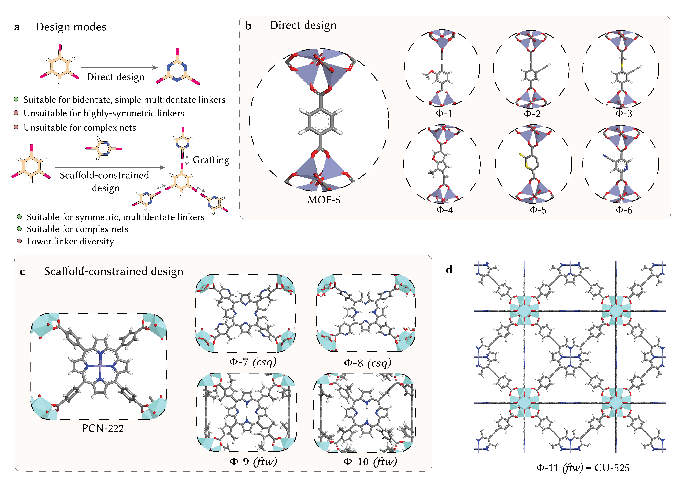
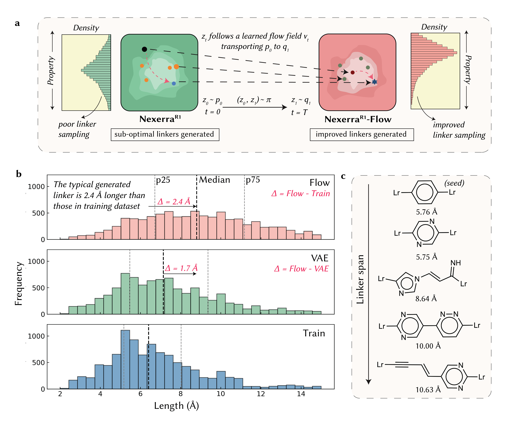
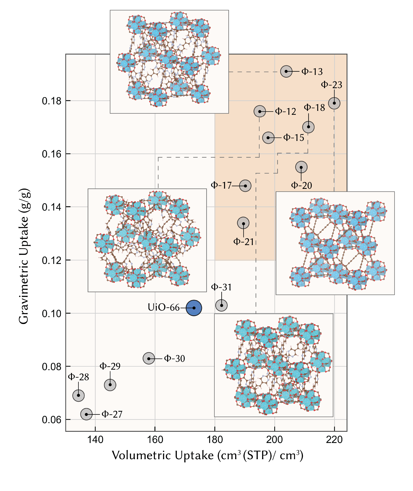

NexerraR1：怎样从连接体设计出新的 MOF，并把生成方向推向储气目标
论文原文 ↗原文：Dhruv Menon、Vivek Singh、Xu Chen 等，A chemical language model for reticular materials design，arXiv:2603.20389v1，2026 年 3 月。本文解读用户提供的 45 页早期预印本（含补充信息）；对应后续 JACS 题名 Flow-Guided Chemical Language Modeling for Linker Design in Reticular Chemistry，所述方法与结果均以这份预印本为准。
金属有机框架（MOF）是一类由金属节点与有机连接体搭成的多孔晶体。金属簇负责提供连接位置，有机分子把节点连成周期网络，网络内部留下的孔可以容纳气体。要改变 MOF 的储气能力，一个重要入口就是改造连接体：改变它的长度、形状和组成，便能改变节点之间的距离、孔空间及孔壁化学。
难点在于，新分子必须同时满足两套要求：化学上有望制备，几何上又能接进指定的网络。通常研究者依靠经验选择连接体，再合成和测试；计算筛选则常从已有连接体库出发。NexerraR1 想把搜索向前推进一步：让模型提出新的连接体，同时用明确的组装约束和性质目标控制设计方向。
一、方法怎么做：先学会生成分子，再控制形状与采样方向
把分子压缩成坐标，才能连续探索化学变化
作者先整理约 90 万个连接体分子作为训练材料。这些数据从既有分子库出发，通过增加取代基扩展化学变化，并用合成复杂度评分筛去特别难制备的分子。模型学习的是这个连接体化学空间中的结构规律。
分子首先被写成 SELFIES 字符串：用一串符号表示原子、化学键和支链，并通过表示规则守住基本价态。随后，模型的“编码器”把整条分子序列压缩成一组连续数值，即潜空间坐标；“解码器”接收这组坐标，逐个选择分子符号，直到生成完整连接体。潜坐标是模型内部的结构表示，三维原子坐标要在后续另外建立。
这套编码—解码模型属于变分自编码器（VAE）。训练一方面要求压缩后还能还原输入分子，另一方面整理潜坐标的分布，使它适合取样和插值。因此，生成新分子有两种入口：在整个潜空间中取样，探索较广的化学变化；或者输入一个已知连接体作为“种子”，在它的潜坐标附近取样，寻找相关的新设计。编码器和解码器使用 Transformer，其注意力机制让模型在处理某个分子片段时也能参考序列中较远的片段，对长连接体尤其有用。

图1｜连接体设计怎样接到 MOF 组装（原文 Figure 1，PDF 第4页）。a 将框架拆成节点、连接体与网络；b 把连接体变成分子符号序列，紫色锚点标记配位连接位置；c 把序列编码到潜空间，再解码回分子；d 示意从解码器给出的符号概率中逐步取样；e 将新连接体接回指定网络。顺着这些箭头看，模型负责的是连接体变化，完整晶体还需要后续组装。
分子怎样接进框架，由种子与骨架约束一起控制
以 1,4-苯二甲酸连接体（BDC）为例，它有两个相对的连接端，是 MOF-5、UiO-66 等材料中熟悉的构筑单元。把 BDC 编码后，在附近取样并解码，就能产生新的分子骨架及取代方式。这种允许整个分子变化的方式称为“直接设计”，适合两端连接、几何要求相对简单的连接体。
四臂卟啉连接体则更难处理：四条臂必须围绕核心保持恰当的连接方向。若让整个分子自由变化，核心的对称形状容易被破坏。作者于是把连接体拆成固定核心与可变连接臂，只让模型设计臂，再把同一种新臂对称接回核心的各个位置。这样既能改变孔壁附近的化学，又保留支撑组装的臂数与核心几何。这是“骨架约束设计”，也是后来 CU-525 实验合成所采用的路线。（第 3—5、32—33 页）
生成后还有一步重要加工：确定连接体在哪里与节点相接。程序以配位锚点标记表示这些位置，对分子进行几何优化，再从可取代位点中选择空间分离较好的端点。随后检查连接数、端点方向及原子拥挤情况。由此，分子生成与组装要求接上了：模型提供新的化学结构，显式规则负责把它整理成适合目标网络的构筑单元。

图2｜两种设计方式保留什么、改变什么（原文 Figure 2，PDF 第6页）。先看 a：直接设计允许整个连接体变化；骨架约束设计保留核心，只生成新臂并对称接回。b 展示以 MOF-5 为模板得到的直接设计候选，c 展示以 PCN-222 为模板得到的卟啉框架候选；括号中的 csq、ftw 是不同网络连接方式的名称。d 是走到实验合成的 CU-525，其验证范围在后文说明。这两条路线允许探索的化学变化不同，骨架约束用部分自由度换取关键几何的保留。
性质分数先负责挑选，流模型进一步改变“更容易生成什么”
即使围绕已知种子生成，新分子也未必符合应用目标。作者用“奖励函数”给候选打分，这里的奖励就是一套可计算的结构偏好。储气设计偏好较长、较刚性的连接体，同时考虑端点环境的对称性和分子量。原因是长连接体可以扩大孔空间，但新增原子也增加材料质量；柔性过大会影响孔形；框架过于疏松时，单位体积能装的气体又可能下降。评分把这些因素综合起来，快速选出值得继续组装和计算的分子。
这一阶段的做法仍是“先生成，再挑选”。若有利的分子在原来的生成分布中很少，就要筛掉大量候选。NexerraR1-Flow 的作用，是让生成分布本身向目标区域移动。本文具体选择的目标是连接体跨度，也就是最远两个配位锚点之间的距离。
流模型如何学习移动方向？作者先把已有连接体编码成潜坐标，再找出跨度较大的那一组，作为目标分布。训练过程中，目标从跨度排在前 30% 的分子逐步收紧到前 5%。然后在每个小批次内，把起始坐标与目标坐标配对；“最优传输”选择总体搬运距离较小的配对，减少无谓的长距离移动。对每一对坐标，作者构造连接起点与终点的路径，在路径的不同位置训练神经网络回答：处在这里时，坐标应该往哪个方向、以多大幅度继续移动？ 这种学习局部移动速度的方法叫“流匹配”。
实际生成时，网络接收当前潜坐标、当前进度和目标跨度阈值，输出一个移动速度。数值程序据此更新坐标，再询问网络下一步的速度，逐步走完整段路径。数学上，这就是求解常微分方程（ODE）：它规定潜坐标随生成进度如何连续变化。这里的“时间”是从起点到终点的生成进度，移动的是分子的压缩表示。走到终点后，坐标交回原来的解码器，变成新分子。基础分子模型保持固定，需要另行训练的是负责目标偏向的流网络。（第 35—39 页）
因此两种控制分工明确：骨架约束保住“怎样连接”，流引导提高“更长的连接体被生成出来”的概率，性质分数继续筛选适用候选。
最后把连接体变成晶体模型，才评价储气表现
顺着论文的 BDC 储气例子走完流程：以 BDC 为种子进行长度偏向生成，解码得到新连接体，整理配位端点并做几何过滤；其中要求端点方向近似线性，角度大于 160°，以适合目标组装。然后把连接体与 Zr₆ 氧簇装入 fcu 网络——UiO-66 所采用的连接关系——并用力场优化三维结构。
这里的网络拓扑规定节点之间“谁与谁连接”，连接体化学则决定实际间距和孔环境。保留 fcu 拓扑，让作者能围绕同一种框架连接方式比较设计效果。
完成组装后，作者用巨正则蒙特卡洛（GCMC）模拟甲烷吸附。在给定温度和压力下，程序反复尝试把甲烷放入孔中、移走或移动，并根据相互作用能接受或拒绝这些操作，统计平衡时孔里平均有多少甲烷。至此，最初的分子设计才转化为完整框架的储气指标。
二、主要结果：生成方向、储气收益与真实合成分别得到了什么
1. 流引导让长连接体从少数候选变成更常见的输出

图3｜目标偏向有没有真正改变输出（原文 Figure 3，PDF 第7页）。a 中的点代表潜坐标，箭头表示学到的移动方向：从原来的采样分布转到目标分布。b 的横轴是连接体跨度（Å），纵轴是各长度区间的分子数；自下而上分别是训练数据、基础 VAE 和流模型，各取10,000个分子，黑色虚线标出中位数。粉色分布比绿色与蓝色整体右移，说明长连接体在输出中变得更常见。c 则展示从 BDC 种子到较长候选的具体分子变化；其中 Lr 是配位锚点标记，并非实际组成中的金属元素。
作者分别从训练数据、基础模型和流模型中取 10,000 个分子，比较跨度分布。基础模型大体延续训练数据的长度分布；加入流以后，生成连接体的跨度中位数比基础模型增加 1.7 Å，比训练数据增加 2.4 Å。这意味着改变发生在整批输出的典型长度上，而非仅挑出一个特别长的分子展示。
在以 BDC 为种子的设计中，种子的跨度为 5.76 Å，最佳生成候选达到 10.63 Å，约增至 1.8 倍，同时经过了适合 fcu 组装的几何筛选。两项比较合在一起说明，流模型确实把采样推向了较长连接体区域，并能从该区域取出仍符合组装条件的设计。（第 7—8 页）
2. 固定 fcu 拓扑，仍找到了重量和体积吸附量同时提高的候选
储气材料有两个都重要的指标：重量吸附量回答“一克材料装多少气”，体积吸附量回答“一定体积的材料装多少气”。扩大孔空间常有利于前者，却可能因框架密度下降而损失后者。作者因此在相同的 298 K、80 bar 条件下，比较生成框架与 UiO-66 的甲烷吸附模拟结果。

图4｜连接体变化是否带来两项储气指标的共同改善（原文 Figure 4，PDF 第9页）。横轴是体积吸附量，纵轴是重量吸附量；每个点代表一个完整框架在298 K、80 bar下的 GCMC 计算结果。蓝点是 UiO-66，灰点是生成候选：位于蓝点右上方，才表示两项指标同时超过对照。φ13 更靠上，φ23 更靠右，分别突出重量与体积优势；左下方也有表现较差的候选，因此收益需要在组装后计算确认。插图给出若干候选优化后的框架结构。
| 框架 | 重量吸附量（g/g） | 体积吸附量〔cm³(STP)/cm³〕 |
|---|---|---|
| UiO-66 | 0.102 | 173 |
| 生成候选 φ13 | 0.191 | 203 |
| 生成候选 φ23 | 0.179 | 219 |
表中 g/g 表示每克框架吸附的甲烷克数；体积指标把甲烷量折算成标准温压状态下的气体体积，再除以框架体积。
φ13 相比 UiO-66 的重量吸附量提高约 87%，体积吸附量提高约 17%；φ23 则分别提高约 75% 和 27%。两者各有优势，却都同时超过了对照。这是有意义的结果：保持同一种网络连接关系，改造连接体仍有机会同时改善两项通常需要权衡的性能。（第 8—9 页）
这项提升沿着一条完整的设计链实现：流引导增加长跨度分子的出现机会，几何过滤留下能接入 fcu 的连接体，组装与优化确定实际孔结构，最后在完整框架上计算吸附。长跨度提供了扩大孔空间的入口，而最终表现还取决于随分子改造一起变化的组成、质量和孔环境。本文展示的是这套路线找到的高性能计算候选；上述数值为刚性框架模型下、单一高压状态的平衡吸附量。
3. 骨架约束设计走到了 CU-525 的实验合成
回看图2d中的 CU-525，可以把另一条验证路线接起来：这项重要结果来自固定卟啉核心、生成新连接臂的路线。作者先在计算中将候选连接体与 Zr₆ 氧簇组装到 ftw 网络；实验采用配位几何相近的 Hf₆ 氧簇，制得 MOF-525 的新变体 CU-525，并通过单晶 X 射线衍射解析了结构。
计算与实验结构在整体拓扑和节点连接方式上相符。这说明保留核心对称性、探索连接臂变化的做法，能够通向实际可制备的框架。实验连接体按已有文献路线制备，生成模型贡献的是连接体与框架的设计方案，合成仍依靠化学方法落实。（第 5、33—36 页）
两条验证路线的范围很清楚：CU-525 支持骨架约束设计能够走向真实晶体；流引导的 UiO-66 类候选支持目标偏向生成能找到较高甲烷吸附量的计算结构。高容量候选尚待相应实验检验。
三、领域贡献：让连接体生成同时接受组装逻辑和性质目标的控制
这篇工作新增的核心能力，是把“提出新连接体”接入可操作的 MOF 逆向设计：从想要的结构与应用方向出发，生成分子，守住连接几何，组装周期框架，再评价材料表现。相较于在固定连接体库中组合和筛选，它能够提出新的分子变化；相较于单纯自由生成分子，它用种子、固定核心及几何规则把变化留在能参与网状组装的区域。
更有方法意义的是，作者将学习分子结构规律与学习目标偏向分开。基础模型提供一个可编码、可解码的连接体空间，流网络在这个空间中调整采样方向。这样，针对某项性质的设计可以利用已有的分子表示，只另外学习该目标所需的移动规律。本文以跨度展示了这种控制，并通过框架吸附计算说明，它能接到实际材料性能评价上。
对 MOF 设计而言，这给出了一种具体的探索方式：既保留金属节点和网络模板，也允许连接体化学主动变化。CU-525 展示了对称骨架内的设计变化能够进入实验；fcu 储气候选则展示了在固定拓扑内仍有同时改善重量与体积吸附量的空间。论文最值得记住的进展，正是把分子创新、组装几何与性质导向放进同一条设计链，同时让每个环节各自完成适合它的任务。
附：原始摘要完整中文翻译
网状化学已经使数以万计的金属有机框架（MOF）得以合成，然而，新材料的发现仍主要依赖直觉驱动的连接体设计和反复实验。因此，研究者只探索了网状材料可及的巨大化学空间中的一小部分，这限制了对具有目标性质的框架的系统发现。在此，我们提出 NexerraR1，一种构筑单元层面的化学语言模型，通过定向生成有机连接体，实现网状化学中的逆向设计。NexerraR1 在分子构筑单元层面开展设计，而非直接生成完整框架，从而保留支撑网状合成的模块化逻辑。该模型既支持低连接数连接体的无约束生成，也支持与预先规定的节点及拓扑相容、受骨架约束的对称多齿基元设计。我们进一步将连接体生成与流引导的分布定向相结合，在保持化学有效性和组装可行性的同时，将生成过程引向与应用相关的目标。生成的连接体随后被组装为三维框架并进行结构优化，以得到与实验合成相容的候选材料。利用 NexerraR1，我们通过重新发现已知 MOF，以及提出对完全由计算生成、此前未报道的框架 CU-525 进行实验合成，验证这一策略。这些结果共同确立了网状材料的一种通用逆向设计范式：可控的化学语言建模使从计算设计到可合成框架的直接转化成为可能。